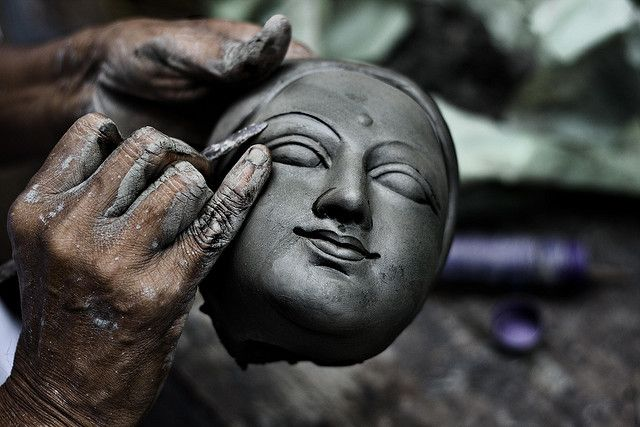

পুজোয় জীবন ও জীবিকা :
শারদোৎসবে পূজার দিনগুলিতে সকল প্রকার অফিস কাছারি ও স্কুল কলেজ ছুটি থাকলেও এই উৎসবকে কেন্দ্র করে লক্ষ লক্ষ মানুষের জীবন ও জীবিকা নির্ধারিত হয়ে থাকে। উৎসব আয়োজনের সূচনা লগ্ন থেকে বিভিন্ন পূজাস্থলে মন্ডপ তৈরীর কাজে নিয়োগ পান হাজার হাজার শিল্পী, কারিগর ও শ্রমিকেরা।
অন্যদিকে পূজা শুরুর বেশ কয়েকদিন আগে থেকেই শহরের বুকে ঢল নামে ঢাকিদের। এইসকল ঢাকিরা পূজার দিনগুলিকে ঢাক-ঢোল, কাঁসরঘন্টার আওয়াজে মুখরিত করে রাখেন। তাছাড়া দুর্গাপুজোকে কেন্দ্র করে বৃহৎ ও ক্ষুদ্র বিভিন্ন ব্যবসায়ীরা নিজেদের জীবিকা নির্বাহ করেন। সর্বোপরি উল্লেখ করতে হয় সেই সকল কারিগর ও শিল্পীদের কথা যাদের হাতে দেবীর মূর্তি প্রাণ পায়।

এই সকল মূর্তিশিল্পী ও কারিগরেরা কোন অংশেই বড় বড় ভাস্করদের থেকে কম নন। যদিও সমাজে সারাবছর তাদের সমান সমাদর নেই বলেই বোধ হয়। যাই হোক, মূলকথা হলো এত বিপুলসংখ্যক মানুষের জীবন ও জীবিকা আবর্তিত হয় বাঙালির শারোদৎসবকে কেন্দ্র করে। এই সকল মানুষেরা মূলত দূর্গোৎসবের এই দিন কয়েকের জন্যই সারা বছর অপেক্ষা করে থাকেন।